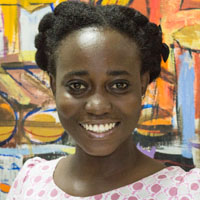
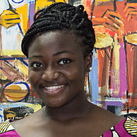
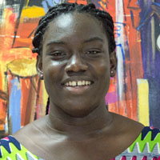
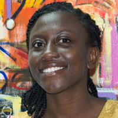
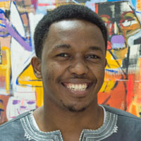
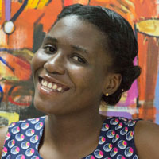

ASHESI STUDENT
COUNCIL

Message from President

“We must challenge ourselves to be the ones who will change this content. We will be the beautiful ones that this continent needs and we must have the conviction that we can do it.” These profound words spoken by Dr. Patrick Awuah describe the conviction with which I believe we can take step towards fostering a deeper sense of unity within the student body. Next year Ashesi will welcome its first batch of engineering students, ushering us into the Second Phase of our journey. We believe it is important that we review the structures we currently have in place to ensure that they join a thriving community. In doing this, we have decided to take a critical look at one of our three pillars; citizenship. We hope to build a strong Ashesi culture in which we can bond better with each other while appreciating the diversity amongst us. Our vision is to foster a deeper sense of unity through an Ashesi Culture even as we sustain and improve upon the great initiatives that have been started by past student governments. We have the conviction that together, we can do this as a community. And we will. Esther Yaa Pokua Addei '16
Executive Team
Esther Addei '16
President

Esther, a third year Business Administration Student is a member of a long and colourful list of young ladies from Wesley Girl’s High School who have made Ashesi University College their home. At Wesley Girl’s she served as a House Prefect, and subsequently extended those leadership qualities to Ashesi, where she served for a year on the Welfare Committee. For the next year, she will head the Ashesi Student Council, making her the second female to hold the position in Ashesi’s history. She is meticulous in managing groups and working effectively to produce results for both group and self. Outside the classroom, she is actively involved in a number of initiatives. She helped run the Bake to Save campaign at Ashesi; by selling cupcakes to raise funds for the Akua Adoma Foundation: the foundation works to fund surgeries of children with brain tumors. Additionally, she joined StarFish Aid, a volunteer program under the EbbyMay Foundation that organizes students to carry out service-learning projects in deprived towns in the Eastern Region of Ghana. Esther also loves singing and is a member of the Kingdom Sanctuary Choir at Ashesi. She is also an active member of Joyfulway Incorporated, a non-denominational evangelistic organization that evangelizes nationally through contemporary music and other creative media. Esther’s vision is to lead the student body to form a deeper sense of unity and community. In her words, “Ashesi University College is bigger than aesthetic architecture, beautifully designed lecture halls, or the beautiful campus; Ashesi University College is the student body. It is about the citizenship of people from different countries, different cultures, different family backgrounds-it is about us, the students. This is the why we seek to take advantage of Ashesi’s pillar of citizenship in creating an Ashesi Culture.”
Ewurabena Ewudziwa Hagan '15
Vice President

Ewurabena, a Business Administration Major, is a warm, loving and fun individual who never ceases to push herself in order to deliver the best she has to offer, and then some. Her concern for others and interest in seeking the welfare of those around her kept her serving in the welfare committee over the past two years. It is her dream to become an entrepreneur who will successfully use these tools to impact the world. As a Social Entrepreneur, Ewurabena pioneered Bake to Save a social enterprise that raises funds for the Akua Adoma Memorial Hope Foundation. As an innovative Entrepreneur, Ewurabena entered a partnership and started a campus-based rental business, Party Perfect. With a passion for art in different forms, Ewurabena often expresses herself through storytelling, poetry, dance and music. This is how she is able to see beauty in things, places and people when others cannot. It therefore comes as no surprise that she admires creativity and innovation. She is involved with numerous clubs and societies on campus such as Kingdom Christian Fellowship, The Ink, Bake to Save, Star Fish Aid, Photography Club and Pencils of Promis. She believes in sacrifice, foresight, dedication, and teamwork. With her organizational skills and passion to help others and make impact within and outside the Ashesi Community, Ewurabena is ready to pull all resources available to deliver the absolute best for the student body and the Ashesi Community.
Amanda Olive Amoah '16
General Secretary and Head of Public Relations Committee

Amanda Olive is a junior majoring in Business Administration at Ashesi with an interest in hands-on activities that led to her participation in both Ashesi Robotics Experience (ARX) 2013 and Ashesi Innovation Experience (AIX) 2014. With experience as a mentor in those two programmes, as well as her experiences in Wesley Girls' High School, Cape Coast, Amanda is set, together with the team, to impact and improve student life in Ashesi in her capacity as the General Secretary and Head of the Public Relations Committee.
Anna Addei '17
Welfare Committee Chairperson
Student of Wesley Girls’ High School in Cape Coast. She continues to exert these values in completing all tasks assigned to her. At Ashesi, she was a member of the Ashesi Model United Nations and served on the Academic Committee of the Student Council in her first year. She has been working closelywith the Office of Student and Community Affairs over the past few months and is currently a Residents’ Assistant in Ashesi’s on-campus housing facility. Anna enjoys indulging in the Arts and often finds herself engaged in some form of writing, drawing or music in her spare time. Now in her sophomore year, she is excited to carry on as Welfare Committee Chairperson of the Ashesi Student Council (ASC). She held this position for a semester with the previous ASC administration and won the “Outstanding ASC Executive” award for that year. Stepping up to the plate for the second time running, she is eager to contribute to the welfare, convenience and comfort of students on the Ashesi campus.
Naa Adukwei Quarcoopome '17
Entertainment Committee Chairperson

Naa Adukwei is a second-year Business Administration student. Prior to becoming Entertainment Chairperson, her first year in Ashesi saw her start and run Smoothshakes, a successful milkshake business with four other sophomores, serve on the Entertainment Committee, teach English at the Berekuso Primary School, act as Event Coordinator for the iStand Above Club, play an active role in the Ashesi Photography club and receiving the Entrepreneurial Spirit award with her Smoothshakes team at the 2014 Ashesi Ubora Excellence Awards ceremony. Naa’s interest in the Arts, in helping people and in organizing events is expressed through her activities both in and out of Ashesi. Her activities outside of Ashesi include working with Accra Theatre Workshop, a Ghanaian theatre company which involved working with artists and children from all walks of life. She intends to bring her creativity, drive to get things done and organizational skills to her role as Entertainment Chairperson. She is committed to adding on to the foundation already laid by the previous chairpersons and hoping to make some substantial contributions of her own to the already diverse extra-curricular activities within the Ashesi community.
Dorcas Amoh-Mensah '16
Outreach Committee Chairperson

Dorcas Amoh-Mensah is a junior pursuing a Bachelor’s degree in Business Administration. She has served the on Ashesi’s Kingdom Christian Fellowship as an executive for two consecutive years. She is also an executive of the nouvelle club, True Love Waits, a club promoting sexual purity. Prior to her appointment, she served as a Career Peer Advisor and she was part of the team that represented Ashesi University in the Intercollegiate Model African Union Summit in London. She won the Buwang Action Award and Committee People’s Choice Award for the Peace and Security Council. Together with a group of friends, she supported in the establishment of Starfish Aid, a community engagement program that seeks to provide quality education to rural kids in four villages in the Upper Manya Krobo District through reading, writing, sanitation and confidence building lessons. This has been a passion she has pursued throughout her stay in Ashesi. As the outreach chairperson, she looks forward to a splendid year characterized with the willingness of every student to serve their community in any capacity without limitations. She envisions a year with a spring up of many sustainable new and old initiatives in order to hold up Ashesi’s pillar of citizenship through service to the community, Ghana and the world. She is an athlete and a former hockey player with an affection for arts especially origami.
Benson Murimi Wachira '16
Sports Committee Chairperson

Benson Wachira is a CS Major in the class of 2016. Despite his strong passion for programming, Benson is very passionate about sports and exercising activities. Prior to his role as a Sports Committee Chairperson, he was the assistant fitness co-ordinator Ashesi peer educators club. He is currently a programming 1 tutor and also the volleyball coach and captain. His passion for sports led him to introduce volleyball at Ashesi with the aim of increasing the number of sports the students can engage in. He’s very cheerful when he’s sharing his skills in volleyball with his teammates, he says his best moment is when playing volleyball. He is optimistic that the Sports Chairperson Committee position will give him a platform to realize his dream of improving and diversifying sports at Ashesi. He is looking forward to continue with the projects and other platforms that have been established by the outgoing committee to improve sports culture at Ashesi. He is encouraging all the students to participate in sports activities even those who have never been involved in sports before. This way we’ll all be able to realize the talents that we never knew we had.
Albert Eyison '16
Off-Campus Committee Chairperson
Albert is a sports enthusiast who also cares about the wellbeing of people around him. Right from high school, he has always been in charge of the welfare of others, thus, he being the manager of all sporting activities in his hall in senior high school. He is currently initiating a soccer league as part of a school’s extra-curricular activity in a village called Korlenya in the eastern region of Ghana to harness young talents. In addition, since the youth do not see the need for education, this initiative is to encourage them to attend school since eligible participants must be in regular attendance of school. Albert is determined, patient and sacrifices a lot to achieve a set goal. He promises to give his best in serving and attending to the general wellbeing of the students, whiles engaging students in lively and entertaining activities.
Anne Bernadette Aidoo-Forson '16
Academic Committee Chairperson

Anne is a junior majoring in Business Administration. Her desire to make an impact led her to join the Adesua Ye team of tutors ( A student founded adult literacy program). She has been a tutor since her sophomore year and recently joined the team of executives as the General Secretary. This experience has led her to improve her interpersonal skills and to value education even more. One of her favourite poems is " Our deepest fear" written by Marianne Williamson as she believes that each individual is capable in shining in their own little corner. She served on the 2013/2014 academic committee where she ably aided her predecessor in the execution of his duties. She believes that this new position is going to be a learning ground for her and avidly looks forward to serving the Ashesi community.
Sophia Mwinkum Dery '16
Finance Committee Chairperson

Before coming to Ashesi, she had held positions in her high school such as the Financial Secretary for the Entertainment Committee and Editorial Board. Sophia Mwinkum Dery is a junior majoring in Business Administration. With her interest in sport, she is currently serving on the Disciplinary Committee for the Ashesi Football Association (AFA). She also has a personal interest in accountancy and is a current student member of the Association of Certified Chartered Accountants (ACCA). She also has the heart of helping underprivileged children in deprived areas and has visited two villages namely; Siblinor and Korlenya both in the Eastern Region through Starfish Aid. Aside this, she loves cooking and reading in her leisure. She is excited to take up the role as the Financial Officer of the Ashesi Student Council. She hopes to continue the good work her predecessors started and also coordinate well with other committees in serving the Ashesi